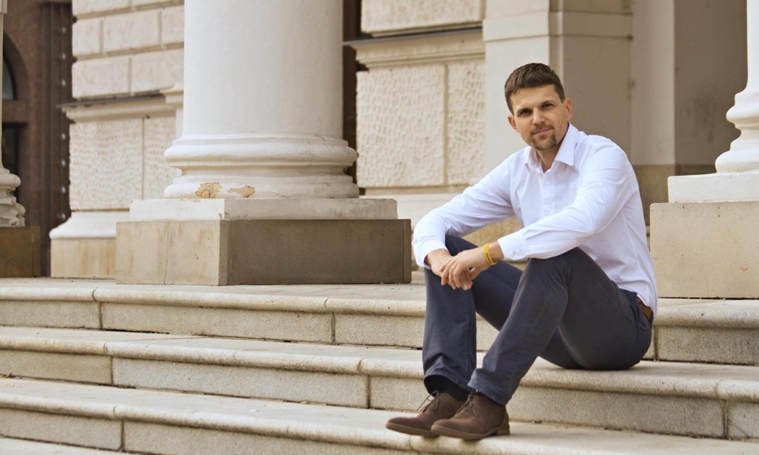
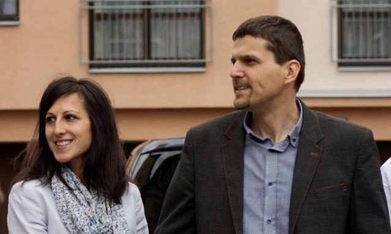
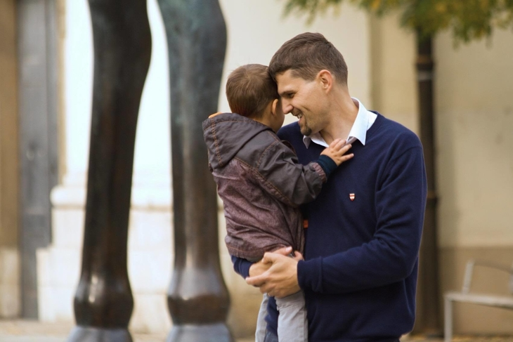

Mohl by ses nám představit?
Pocházím z Osové Bitýšky na Vysočině – sídle Diecézního centra života mládeže brněnské diecéze. Do Brna jsem přišel za studiem. Studoval jsem na Střední průmyslové škole elektrotechnické a poté jsem vystudoval Fakultu informatiky na Masarykově univerzitě. Po škole jsem se živil jako projektový manažer. V roce 2015 jsem se stal místostarostou městské části Brno-sever a nyní pracují jako 1. náměstek primátorky města Brna.
Jsi prvním náměstkem primátorky města Brna a zastupitelem městské části Brno-sever. Co máš přesně na starosti a co zahrnuje tvoje práce?
Mám na starosti oblast rodiny, zdravotnictví, školství, sportu, životního prostředí, územního plánování a rozvoje města. Ve své práci se soustředím především na to, aby se mladým lidem v Brně líbilo, aby tady měli možnost sehnat bydlení a ideálně tady založili rodinu. Zároveň ale také chci, aby stárnutí v Brně bylo důstojné, aby senioři mohli co nejdéle žít ve svém vlastním prostředí a aby systém sociální péče byl kvalitní.
Myslím si, že odpovědností každého člověka, a o to více věřícího, je převzít část odpovědnosti za naši planetu, kterou jsme dostali do správy.
Snažím se také, aby město bylo aktivní v boji proti suchu a ochraně životního prostředí. Důležité pro mě je zlepšování školního prostředí, podpora jazykového a technického vzdělávání, zajištění parkování především u nemocnic a u škol, rozvoj inovací a zároveň ochrana významných památek. Chci také řešit skutečné problémy lidí. Proto jsme je společně s dalšími kolegy navštěvovali u nich doma, zastavovali je na ulicích a ptali se, co by v Brně chtěli zlepšit. Máme tak desítky konkrétních podnětů k práci. K mé práci také patří zastupování primátorky na různých jednáních a společenských akcích.
V relativně mladém věku ses stal známou osobností (minimálně) brněnské politické scény. Poznávají tě třeba lidi na ulici? Vnímáš to nějak? Ovlivňuje Tě nějak Tvoje vzrůstající popularita?
Nevím, jestli se tomu dá říkat popularita. Přece jenom na politika se hodně lidí dívá spíše skrze prsty. V rámci té práce přijdete do kontaktu se stovkami lidí, proto se počet těch, kteří vás poznávají, zvyšuje.
Víra v Boha a křesťanské hodnoty mi dávají sílu a taky kompas v tom, kterými tématy se zabývat.
Není to ale tak, že by mě lidi, které neznám, zastavovali na ulici každý den. Jestli mě to nějak výrazně ovlivňuje, nedokážu posoudit, to by mnohem lépe zhodnotili mí dlouholetí kamarádi.
Mimo to jsi též manželem a otcem čtyř dětí. Jak zvládáš skloubit pracovní a rodinný život?
Je to náročné. Velkou oporu mám ale ve své ženě, která to zvládá naprosto skvěle. Já se přes týden snažím doprovázet děti do školy a do školky a také se snažím, abychom měli společné večeře. Ale ne vždycky se to podaří, bohužel. Rodině ale patří víkendy, děláme výlety po okolí, návštěvy blízkých a známých. Občas se nám taky podaří zajít na Kometu. Jsme totiž velcí fanoušci.

Jakým způsobem relaxuješ? Máš na to vůbec čas?
Kromě zmiňovaných víkendů a fandění Kometě, chodím ještě každou středu hrát florbal. Tam si vždycky vyčistím hlavu a cítím, že i moje tělo potřebuje více pohybu. Odpočinu si ještě při práci na zahradě nebo při folklorních akcích.
Co bylo impulzem k tomu, abys vstoupil do politiky?
Už od malička jsem se zajímal o politiku a veřejné dění. Jako pětiletý kluk jsem při sledování sametové revoluce v televizi běhal po místnosti s českou vlajkou a skandoval „ať žije Havel!“ Zásadním zlomem pro můj vstup do politiky byl však rok 2010, když se KDU-ČSL nedostala do Poslanecké sněmovny.
Mým životním cílem je vychovat dobře naše děti a žít život tak, aby se člověk pořád přibližoval k nebi.
Tehdy jsme se s partou kamarádů z okolí VKH rozhodli, že to tak nenecháme a pomůžeme straně, aby se dostala zpět. Chtěli jsme, aby křesťansko-demokratický hlas byl ve sněmovně zastoupen. Velkou motivací byly i promluvy otce Josefa Stuchlého, tehdejšího studentského kaplana, který nás vysokoškoláky vybízel, ať jsme aktivní ve veřejném životě a prostoru.
Proč zrovna KDU-ČSL, nejde přece jenom prosazovat křesťanské hodnoty i v rámci jiných politických stran?
Určitě existují jednotlivci i v jiných politických stranách, kteří se o to pokouší. Ale program žádné jiné politické strany není na těchto hodnotách přímo založen. KDU-ČSL má naopak své neotřesitelné hodnoty – solidaritu, svobodu a důstojnost každého člověka, sociálně-tržní hospodářství, podporu občanského a spolkového života, zdůraznění úlohy obcí a krajů při správě věcí veřejných, úctu ke stáří, ale zároveň otevřenost pokroku. Proto je pro mě KDU-ČSL jedinou stranou přímo vystavěnou na křesťanských hodnotách.
Co Tě znám, vždy jsi byl aktivní a vůdčí osobností – vedl jsi VKH Brno, založil Mladé lidovce, působil jsi v akademickém senátu Masarykovy univerzity, v posledních volbách jsi byl lídrem kandidátky… Myslíš, že je zapotřebí nějakých zvláštních předpokladů pro to, aby byl člověk schopný dělat něco navíc a byl aktivní ve veřejném životě? Nebo je zapotřebí „jen“ vystoupit ze své komfortní zóny a někde začít?
Asi obojí. Určitě musí člověk mít předpoklady k tomu, že chce pomáhat lidem a že chce být jejich zástupcem. Já do toho šel vždy s tím, že ty věci chci dělat dobře a pro lidi. Ale zároveň určitě musí člověk vystoupit ze své komfortní zóny. Někdo víc, někdo méně.
Jděte do politiky, jděte do spolků, občanských sdružení, ale i do byznysové sféry nebo na soudy a na vysoké školy. Zajímejte se o dění kolem sebe a o to, co můžete ovlivnit a ovlivňujte to.
Já mám třeba hrozně rád kontakt s lidmi a mluvit s nimi je mi přirozené, takže v tomto ohledu to pro mě zas tak náročné nebylo. Ale přijdou chvíle, kdy musíte řešit situace tak, jak vám příjemné není, musíte občas člověka zklamat, když víte, že mu nedokážete pomoct. To není lehké.
Jsi věřícím člověkem, praktikujícím katolíkem. Setkáváš se s předsudky lidí, kteří si myslí, že křesťan by se měl stranit politiky, aby se „neušpinil“? Jak s tím případně bojuješ? A co si o tom myslíš?
Občas se s těmito předsudky setkávám, ale nesouhlasím s nimi. Politika je i práce, která stejně jako jiné profese přináší určitá pokušení, ale také možnost dělat ji poctivě a dobře. Myslím si, že odpovědností každého člověka, a o to více věřícího, je převzít část odpovědnosti za naši planetu, kterou jsme dostali do správy.
Jakou roli hraje víra a život z ní v tom, co děláš?
Víra v Boha a křesťanské hodnoty mi dávají sílu a taky kompas v tom, kterými tématy se zabývat. Současně se snažím, aby byl vidět dopad mého přesvědčení v každodenních rozhodnutích a kontaktu s lidmi.
Tématem letošního Absolventského Velehradu je „Co je cíl?“ Co je podle tebe cílem? Jaký je Tvůj životní cíl a co jsou Tvé aktuální „malé“ cíle? Co bylo tvým cílem v minulosti a jak to vnímáš teď? Jak se to v průběhu času mění?
Mým životním cílem je vychovat dobře naše děti a žít život tak, aby se člověk pořád přibližoval k nebi. V minulosti mým cílem bylo vystudovat vysokou školu a najít si životní partnerku, což se mi díky mé ženě Zuzance povedlo. V ostatních cílech mě drží na uzdě cukrovka, kterou mi diagnostikovali, když se nám narodila Anežka.
Nebojte se zastávat názory, nebojte se přihlásit ke křesťanským hodnotám a k víře. Je důležité, aby vaše křesťanské hodnoty byly zastoupeny všude ve společnosti. Najděte si způsob a formu, která vám vyhovuje a buďte aktivní. Jděte do toho!
Každá taková nemoc člověku připomíná, že si má vážit času s blízkými a neodkládat toho příliš do budoucna. Takže mám tři syny a jednu dceru, zasadil jsem několik stromů a mám dům.

Co pro dosažení svého cíle pravidelně děláš, jak se k němu přibližuješ?
V pracovní oblasti mě hodně ovlivňuje moje praxe projektového manažera – takže plánování, vyhodnocování rizik a postupná realizace kroků, které vedou k úspěšnému plnění cílů. Důležité pro mě je také aktivně naslouchat druhým lidem. V oblasti osobních priorit je to spíš o tom vyhradit si čas, na který se nesahá a je primárně určený mojí rodině.
Co bys vzkázal mladým absolventům – účastníkům Absolventského Velehradu?
Dovolil bych si parafrázovat otce Josefa: Jděte do toho, zapojte se. Jděte do politiky, jděte do spolků, občanských sdružení, ale i do byznysové sféry nebo na soudy a na vysoké školy. Zajímejte se o dění kolem sebe a o to, co můžete ovlivnit a ovlivňujte to. Nebojte se zastávat názory, nebojte se přihlásit ke křesťanským hodnotám a k víře. Je důležité, aby vaše křesťanské hodnoty byly zastoupeny všude ve společnosti. Najděte si způsob a formu, která vám vyhovuje a buďte aktivní. Jděte do toho!
Třeba během čtení tohoto rozhovoru někdo přemýšlí, že by chtěl být více aktivní ve veřejném životě, že by se chtěl zapojit nebo nějak pomoct, co bys mu doporučil.
Určitě se nebojte zapojit. Pokud nechcete jít hned do politické strany, doporučuji zkusit Mladé lidovce, kteří se věnují primárně občanskému vzdělávání, ale pořádají i kulturní a společenské akce a také se soustředí na osobní rozvoj každého člena. Zároveň přichází se spoustou nápadů a podnětů k práci. Myslím, že to je skvělý start pro každého.
Děkujeme moc Petrovi za rozhovor!